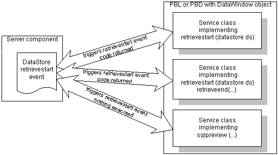

Defining a service class for PowerBuilder components
 To create and register a service class for PowerBuilder
components:
To create and register a service class for PowerBuilder
components:
In the PBL that contains the DataWindow object for the server component, define one or more PowerBuilder custom class user objects.
In each custom class user object, define one or more user-defined events. The event signatures must match one of these (all these events return a long):
- DBError (long sqldbcode, string sqlerrtext, string sqlsyntax, DWBuffer buffer, long row, DataStore ds)
- HTMLContextApplied (string action, DataStore ds)
- RetrieveEnd (long rowcount, DataStore ds)
- RetrieveStart (DataStore ds)
- SQLPreview (SQLPreviewFunction request, SQLPreviewType sqltype, string sqlsyntax, DWBuffer buffer, long row, DataStore ds)
- UpdateEnd (long rowsinserted, long rowsupdated, long rowsdeleted, DataStore ds)
- UpdateStart (DataStore ds)
The arguments are the same as those documented for the similarly named DataWindow events in the DataWindow Reference , with the exception of the additional DataStore argument, which gives the user object access to the Web DataWindow data.
In the event script, use return codes to specify whether the server component should cancel the event.
The return codes are also the same as those documented in the DataWindow Reference . Any of the service classes that implements the event can specify that the event be canceled.
Register the service classes for the component.
There are two ways to make the user object available as a service class:
- For any component in EAServer or another supported server
such as COM+, call the SetServerServiceClasses method in
the Web page template's server-side script:
dwGen.SetServerServiceClasses
("uo_update_validate;uo_retrieve_process"); - For a custom component in EAServer,
add this property in EAServer Manager:
com.sybase.datawindow.serverServiceClasses
Set its value to the list of user object names, with names separated by semicolons. For example:uo_update_validate;uo_retrieve_process
- For any component in EAServer or another supported server
such as COM+, call the SetServerServiceClasses method in
the Web page template's server-side script:
 Using server component methods with the DTC If you are using the Web DataWindow DTC or the JSP Target
object model, you can use methods of the server component by using
the Component property. For example:
Using server component methods with the DTC If you are using the Web DataWindow DTC or the JSP Target
object model, you can use methods of the server component by using
the Component property. For example:
webDW.connectToComponent();
webDW.Component.SetServerServiceClasses
("uo_updatestart");
Example
Suppose that you want to check that data did not exceed a budgeted total before it was updated in the database. You might set up a service class that implements the UpdateStart event.
In the custom class user object in PowerBuilder, select Insert>Event and declare a new event called UpdateStart that returns a long and has one argument of type DataStore called ds:
UpdateStart (DataStore ds) returns long
This script for the UpdateStart event has a DataStore that retrieves data from a budget table and compares it to the component's data:
DataStore ds_budget
double darray[], total
long ll_upper
integer i
ds_budget = CREATE datastore
ds_budget.DataObject = "d_budget"
ds_budget.SetTransObject(...)
ds_budget.Retrieve( )
// Get data to be validateddarray[] = ds.Object.expenses.Primary
// Add up values in darray
ll_upper = UpperBound(darray)
FOR i = 1 to ll_upper
total = total + darray[i]
NEXT
IF ds_budget.Object.cf_expense_total < total THEN
RETURN 1
END IF
Defining a service class for Java components
 To create and register a service class for Java
components:
To create and register a service class for Java
components:
Make sure your Java service class is in the system classpath.
In your Java service class, define one or more methods. Method prototypes must match one of these (all event datatypes are in the powersoft.datawindow.event package):
- DBError (DatabaseEvent event, DataStore ds)
- RetrieveEnd (RetrieveEvent event, DataStore ds)
- RetrieveStart (RetrieveEvent event, DataStore ds)
- SQLPreview (DatabaseEvent event, DataStore ds)
- UpdateEnd (UpdateEvent event, DataStore ds)
- UpdateStart (UpdateEvent event, DataStore ds)
The arguments are the same as those documented for the similarly named DataWindow, Java Edition events in the DataWindow Reference , with the exception of the additional DataStore argument, which gives the Java class access to the Web DataWindow data.
In the class methods, set the return codes to specify whether the server component should cancel the event.
The return codes are also the same as those documented in the DataWindow Reference . Any of the service classes that implements the event can specify that the event be canceled.
Register the service classes for the component.
There are two ways to make the Java class available as a service class:
- For any component in EAServer or another supported server
such as COM+, call the SetServerServiceClasses method in
the Web page template's server-side script:
dwGen.SetServerServiceClasses
("UpdateValidate;RetrieveProcess"); - For a custom component in EAServer,
add this property in EAServer Manager:
com.sybase.datawindow.serverServiceClasses
Set its value to the list of user object names, with names separated by semicolons. For example:UpdateValidate;RetrieveProcess
- For any component in EAServer or another supported server
such as COM+, call the SetServerServiceClasses method in
the Web page template's server-side script:
 Using server component methods with the DTC If you are using the Web DataWindow DTC or the Web Target
object model, you can use methods of the server component by using
the Component property. For example:
Using server component methods with the DTC If you are using the Web DataWindow DTC or the Web Target
object model, you can use methods of the server component by using
the Component property. For example:
webDW.connectToComponent();
webDW.Component.SetServerServiceClasses
("UpdateStart");
Example
Suppose that you want to check that data did not exceed a budgeted total before it was updated in the database. You might set up a service class that implements the UpdateStart event.
The method declaration would be:
public void UpdateStart (UpdateEvent event,
DataStore ds)
The body of this method has a DataStore that retrieves data from a budget table and compares it to the component's data:
import powersoft.datawindow.event.*;
import powersoft.datawindow.*;
public void UpdateStart (UpdateEvent event, DataStore ds)
{DataStore ds_budget;
ds_budget = new DataStore();
ds_budget.setSourceFileName
("c:\\mydirectory\\mypbd.pbd");
ds_budget.setDataWindowObjectName ("d_object");ds_budget.setTransObject(...);
ds_budget.retrieve( );
// Get data to be validated
int rowcount = ds.getRowCount();
int total = 0;
for (int i = 1; i<=rowcount;i++){total=total + ds.getItemNumber(i, "expenses",
ds.Primary);
}
String expense_total = ds_1.describe (...);
double d_expense_total = Double.parseDouble
(expense_total);
if (d_expense_total<total){event.setReturnCode(1);
}
)